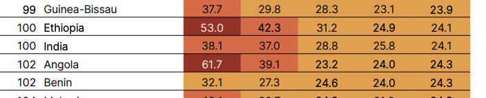

Headline story (2026)
- Global reversal: World GHI 18.1 (moderate) — higher than 17.6 in 2018, breaking the long decline from 28.2 (2000).
- Theme: Hunger and insecurity are mutually reinforcing — food security must be in peace & security policy.
- Drivers: Conflict (record state-based conflicts post-WWII), climate shocks, economic/trade disruption (Ukraine war, fertilizer prices, shipping risks).
- Severity: 8 countries alarming; 36 serious; 32 countries worse than 2018.
- SDG trajectory: At current pace since 2000, 57 countries won’t reach “low hunger” by 2030.
- Hope: Nine countries cut GHI >20% since 2018 (e.g. Nepal, Rwanda, Togo, Uganda, Venezuela); long-run gains in Nepal, Sierra Leone, Tajikistan, Uganda.
GHI severity scale (0 = best)
Global & regional snapshot
Regional trends vs 2018
- Worsened: Africa South of the Sahara; West Asia & North Africa.
- Unchanged: Europe & Central Asia.
- Improved slightly (<1 pt): Latin America & Caribbean; East & Southeast Asia.
- Highest hunger: Africa South of the Sahara & South Asia (both serious band).
Alarming countries (2026)
Burundi, Chad, DRC, Madagascar, Somalia, South Sudan, Sudan, Yemen (data gaps affect some scores).
India — rank & trend

| Year | 2000 | 2006 | 2012 | 2018 | 2026 |
|---|---|---|---|---|---|
| India GHI | 38.1 | 37.0 | 28.8 | 25.8 | 24.1 |
Underlying indicators (India, latest periods in dataset)
- Undernourishment (2023–2025): 9.8% — down from 10.5% (2017–2019).
- Child wasting (2021–2025): 15.1% — acute undernutrition (survey-backed where official FAO line missing).
- Child stunting (2024): 29.3% — chronic undernutrition (down from 35.6% in 2018).
- Child mortality (2024): 2.7% — under-five mortality rate (continued decline).
Report notes India’s score has been serious since 2012; long-run fall from 38.1 (2000) is large, but rank stays ~100 because peers also improved.
Appendix data table / 2026.xlsx; GHI 2026 South Asia chapter.South Asia context
- Regional GHI 23.5 — second-highest globally after Africa South of the Sahara.
- ~218 million undernourished in South Asia (incl. Iran), 2023–2025.
- Nepal among strongest long-term improvers; Bangladesh 19.2 (moderate) but progress slowed like India.
- Monsoon / El Niño risks flagged for rainfed India (IMD 2026 cited in report).
How GHI is calculated
One-line idea
Turn four hunger-related percentages into a single score 0–100 (0 = least hunger). Equal weight (¼ each) on the standardized values — not a weighted average of different units.
| Symbol | Indicator | Raw data (what you read in reports) | Standardized score (0–100) | Source |
|---|---|---|---|---|
| PUN | Undernourishment | % of population undernourished | = value itself (cap at 100 if needed) | FAO |
| PW | Child wasting | % of children <5 with low weight-for-height | = prevalence % (cap at 100) | UNICEF / WHO / World Bank |
| PS | Child stunting | % of children <5 with low height-for-age | = prevalence % (cap at 100) | UNICEF / WHO / World Bank |
| CM* | Child mortality | Under-five mortality rate (% of live births) | CM* = min(100, 10 × CM) Example: CM = 2.7% → CM* = 27 |
UN IGME |
Why ×10 on mortality? So a 10% under-five death rate maps to the top of the scale (100), comparable to “100% stunting” — otherwise mortality would dominate too little in the average.
Worked example — India (illustrative arithmetic)
| Component | Report value (2026 cycle) | Standardized |
|---|---|---|
| PUN | 9.8% | 9.8 |
| PW | 15.1% | 15.1 |
| PS | 29.3% | 29.3 |
| CM → CM* | 2.7% → ×10 | 27.0 |
| Mean (illustrative) | (9.8+15.1+29.3+27) ÷ 4 ≈ 20.3 | |
| Published India GHI 2026 | 24.1 (official table) | |
Published GHI can differ slightly from a quick hand calculation because the report uses final harmonized/provisional inputs (Appendix B), multi-year pools, and rounding. For exams, quote 24.1 and the four indicators from the dataset — not your back-of-envelope mean alone.
Score → severity label
| GHI range | Label |
|---|---|
| ≤ 9.9 | Low |
| 10.0 – 19.9 | Moderate |
| 20.0 – 34.9 | Serious ← India (24.1) |
| 35.0 – 49.9 | Alarming |
| ≥ 50.0 | Extremely alarming |
2026 data windows (what “2026 score” uses)
| Indicator | Period in GHI 2026 |
|---|---|
| Undernourishment | 2023–2025 (3-year average) |
| Child wasting | Latest year available in cycle |
| Child stunting | 2024–2025 |
| Child mortality | 2024–2025 |
Country vs world score (trap)
- Country GHI: standardize four indicators for that country → mean.
- Global / regional GHI: build population-weighted aggregates for each indicator first, then apply the same formula (synopsis, Appendix A).
Publisher: Welthungerhilfe + Concern Worldwide (NGO index; uses UN/FAO data — not a UN index).
Global trend since 2018 (why score rose)
| Indicator (global) | Since 2018 |
|---|---|
| Undernourishment | ↑ worse |
| Child stunting | ↑ worse |
| Child wasting | ↑ worse |
| Child mortality | ↓ slightly better |
| Net GHI | 18.1 vs 17.6 in 2018 |